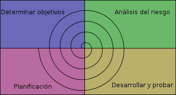

Galactic Software
Obregon Sonora, Mexico
¿QUE ES?:
Es el enfoque metodológico que ordena rigurosamente las etapas del ciclo de vida del software, de forma que el inicio de cada etapa debe esperar a la finalización de la inmediatamente anterior.
Análisis de los requisitos del software:
-El proceso de recopilación de los requisitos se centra e intensifica especialmente en el software.
-El ingeniero de software debe comprender el ámbito de la información del software, así como la función, el rendimiento y las interfaces requeridas.
Diseño:
-El diseño del software se enfoca en cuatro atributos distintos del programa: la estructura de los datos, la arquitectura del software, el detalle procedimental y la caracterización de la interfaz.
Implementacbrión o Codificación:
-El diseño debe traducirse en una forma legible para la maquina, en este paso nos enfocamos a realizar esto.
Prueba:
-La prueba se centra en la lógica interna del software, y en las funciones externas, realizando pruebas que aseguren que la entrada definida produce los resultados que realmente se requieren.
Mantenimiento:
-El software sufrirá cambios después de que se entrega al cliente. Los cambios ocurrirán debido a que hayan encontrado errores, a que el software deba adaptarse a cambios del entorno externo (sistema operativo o dispositivos periféricos), o debido a que el cliente requiera ampliaciones funcionales o del rendimiento.
DESCRIPCIÓN
• Es un modelo sencillo(para explicar al cliente).
• Esta enfocado a un sistema secuencial en el desarrollo del software.
• Requiere que los requerimientos estén bien definidos y estables en forma razonable.
• Es el método mas antiguo en la Ingeniería del software.
Estructura:
CARACTERíSTICAS:
-Es el mas utilizado.
-Para que el proyecto tenga éxito deben desarrollarse todas las fases.
-Si se cambia el orden de las fases, el producto final será de inferior calidad.
VENTAJAS:
-La planificación es sencilla.
-La calidad del producto resultante es alta.
-Permite trabajar con personal poco cualificado.
-Sus fases son conocidas por los desarrolladores.
-Los usuarios lo pueden comprender fácilmente.
DESVENTAJAS:
-Las iteraciones son costosas.
-Los problemas que se presentan son corregidos posteriormente.
-Puede que el software no cumpla con los requisitos.
-Es difícil incorporar nuevas cosas si se quiere actualizar.
-Se tarda mucho tiempo en pasar por todo el ciclo.
-Las revisiones de proyecto de gran complejidad son muy difíciles.
¿QUE ES?:
El modelo espiral en el desarrollo del software es un modelo para la creación de software donde el esfuerzo del desarrollo es iterativo, tan pronto culmina un esfuerzo del desarrollo por ahí mismo comienza otro; además en cada ejecución del desarrollo se sigue cuatro pasos principales:
• Determinar o fijar los objetivos
En este paso se definen los objetivos específicos para posteriormente identifica las limitaciones del proceso y del sistema de software, además se diseña una planificación detallada de gestión y se identifican los riesgos.
• Análisis del riesgo
En este paso se efectúa un análisis detallado para cada uno de los riesgos identificados del proyecto, se definen los pasos a seguir para reducir los riesgos y luego del análisis de estos riesgos se planean estrategias alternativas.
• Desarrollar, verificar y validar
En este tercer paso, después del análisis de riesgo, se eligen un paradigma para el desarrollo del sistema de software y se lo desarrolla.
• Planificar
En este último paso es donde el proyecto se revisa y se toma la decisión si se debe continuar con un ciclo posterior al de la espiral. Si se decide continuar, se desarrollan los planes para la siguiente fase del proyecto.

CARACTERÍSTICAS:
Es considerado como un modelo evolutivo ya que combina el modelo clásico con el diseño de prototipos.
Contiene una nueva etapa que es el análisis de riesgos, no incluida anteriormente.
Este modelo es el indicado para desarrollar software con diferentes versiones actualizadas como se hace con los programas modernos de PC´s.
La ingeniería puede desarrollarse a través del ciclo de vida clásico o el de construcción de prototipos.
Este es el enfoque más realista actualmente.
El modelo en espiral esta compartida en varias actividades estructurales, también llamadas regiones de tareas. Existen seis regiones de tareas que son:
Comunicación con el cliente: esta es una tarea requerida para establecer comunicación entre el desarrollador y el cliente.
Planificación: esta tarea es necesaria aplicarla para pode definir los recursos, el tiempo y otras informaciones relacionadas con el proyecto, es decir, son todos los requerimientos.
Análisis de riesgos: esta es una de las tareas principales por lo que se aplica el modelo en espiral, es requerida para evaluar los riesgos técnicos y otras informaciones relacionadas con el proyecto. Ingeniería: esta es una tarea necesaria ya que se requiere construir una o más representaciones de la aplicación.
Construcción y adaptación: esta tarea es requerida en el modelo espiral porque se necesita construir, probar, instalar y proporcionar soporte al usuario.
Evaluación el cliente: esta también es una tarea principal, necesaria para adquirir la reacción del cliente según la evaluación de las representaciones del software creadas durante la etapa de ingeniería y la de implementación creada durante la etapa de instalación.
VENTAJAS:
No requiere una definición completa de los requerimientos del software a desarrollar para comenzar su funcionalidad.
En la terminación de un producto desde el final de la primera iteración es muy factible aprobar los requisitos.
Sufrir retrasos corre un riesgo menor, por que se comprueban los conflictos presentados tempranamente y existe la forma de poder corregirlos a tiempo.
DESVENTAJAS:
Existe complicación cuando se evalúa los riesgos.
Se requiere la participación continua por parte del cliente.
Se pierde tiempo al volver producir inicialmente una especificación completa de los requerimientos cuando se modifica o mejora el software.
El modelo en espiral para la ingeniería de software es en la actualidad el enfoque más realista para el desarrollo de software y de sistemas a gran escala. Utiliza un enfoque evolutivo para la ingeniería de software, permitiendo al desarrollador y al cliente entender y reaccionar a los riesgos en cada nivel del modelo en espiral.
¿QUE ES?:
Es una manera de abordar el lanzamiento de negocios y productos que se basa en aprendizaje validado, experimentación científica e Iteración en los lanzamientos del producto para acortar los ciclos de desarrollo, medir el progreso y ganar valiosa retroalimentación de los clientes.
El método pretende validar nuestro aprendizaje actuando con rapidez y sin esperar a tener un producto perfectamente acabado. Lo importante es conectar con clientes de verdad para probar nuestras hipótesis y saber cuanto antes si debemos rectificar o seguir adelante.
Y para hacer estas comprobaciones con el mínimo coste, creamos el concepto de Producto Mínimo Viable o MVP (por sus siglas en inglés) que es una versión de nuestro producto, con sus características básicas fundamentales, con el objetivo de maximizar nuestro aprendizaje del negocio, producto y mercado.
CARACTERíSTICAS:
• Construir: desarrollamos nuestro MVP teniendo en cuenta las hipótesis de partida
• Medir: creamos una serie de métricas para valorar nuestro rendimiento.
• Aprender: gracias a las métricas obtenemos datos que nos sirven para conocer mejor el negocio y mejorar.
Este ciclo es iterativo, y debemos crear nuevos o modificados MVPs y volver a lanzarlos con ciclos de desarrollo muy cortos.
VENTAJAS:
-Ya no necesitas un plan de negocios
-Gastos minimos.
-Pregunta al mercado
-Prototipos rapidos
DESVENTAJAS:
-Lean no tiene relación con la financiación
-Falta completa de aceptación
-¿Es lo que el cliente quiere?
Explicación
Explicación
Explicación
Antonio Caso 2266, Villa Itson, C.P. 85130.
Edificio AV1800, Cubículo 31.
Teléfono: 4109000 Ext.1531.